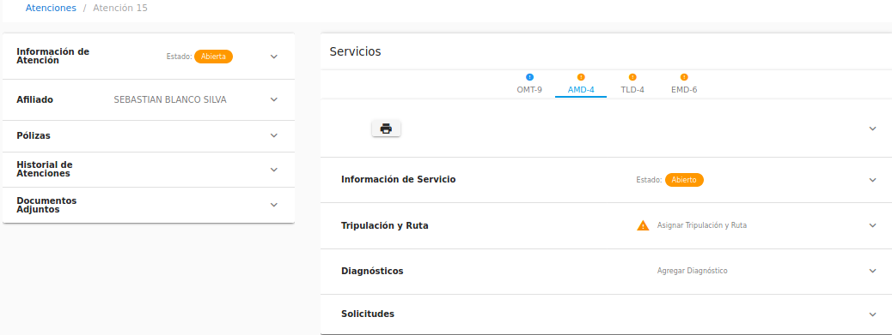
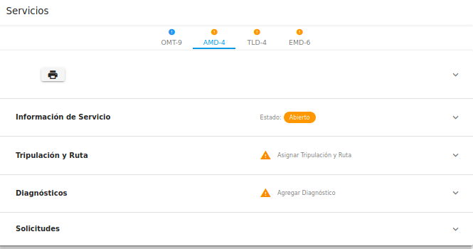

Asistente¶
El Asistente es la persona que apoya a la gerencia en su gestión para obtener cualquier información concerniente a las atenciones, servicios, afiliados y/o tripulaciones de Atencion-1. Recuerda que si quieres conocer los conceptos utilizados en la plataforma Atención-1, puedes revisar este Glosario que hemos preparado.
Para ingresar a la plataforma como Asistente, debemos escribir en la barra de dirección de nuestro navegador: https://atencion1.venedigital.com. Una vez allí veremos en la barra inferior información acerca de Atención-1, un enlace con ayuda que contendrá un manual, una guía de Preguntas Frecuentes y enlace a un correo electrónico con el que se podrá contactar al equipo de desarrollo.
Previamente, el personal encargado de la administración del sistema Atencion-1 es el encargado de crearte el usuario con el rol de Asistente para poder ingresar al sistema.
Para ingresar debes indicar el nombre y contraseña del usuario, en este caso Asistente. Una vez dentro de la plataforma, puedes apreciar en la parte superior derecha, el acceso a los datos del perfil del usuario que acabas de ingresar. Del lado superior izquierdo el menú donde puedes acceder más fácilmente al panel de atenciones, tripulaciones, afiliados y generación de reportes. Y en la parte central, se muestra el panel de atenciones dividido en cuatro secciones:
Atenciones en espera.
Atenciones próximas programadas: en esta sección se encuentran todos los PHD o servicios AMD/LAB/TLD/EMD programados.
Atenciones en progreso: esta sección muestra los servicios que actualmente están siendo atendidos.
Atenciones por cerrar.
Para visualizar la información de una atención, en el extremo derecho del listado de atenciones haces clic sobre el ícono en la linea contentiva de la atención a revisar, el cursor sobre el ícono despliega el mensaje Mostrar.
Una vez seleccionada la atención, aparecen dos secciones en columnas de páneles:
La sección del lado izquierdo contiene en paneles los datos importantes de la atención: panel de información general de la atención, panel de datos relevantes del afiliado atendido, panel de información general de las pólizas asociadas al afiliado, panel del historial de atenciones y el panel de documentos adjuntos solicitados para los procesos propios de cada servicio de la atención.
La sección del lado derecho muestra la información referente a los servicios contenidos en la atención. Cada servicio se muestra, con los acrónimos de sus nombres, en pestañas sobre las que haces clic y despliegan en paneles la información de cada servicio:
La cantidad y tipo de paneles se muestran según el servicio: panel de información general del servicio, panel de tripulación y rutas, panel de diagnóstico, panel de generación de nota de despacho, entre otros.
Todos los paneles (de atención o de servicios) se abren y se cierran al hacer clic sobre el borde superior de cada compartimiento.
Como usuario con rol de Asistente, en esta pantalla podrás visualizar todos los datos y detalles de una atención y sus servicios, mientras que para obtener el documento que agrupa la información de cada servicio, el ticket de servicio, justo debajo de las pestañas con los acrónimos de los servicios se encuentra el primer panel con un ícono de una impresora, al cual haces clic para generar el .pdf con toda la información al día del servicio seleccionado.